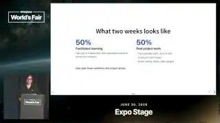
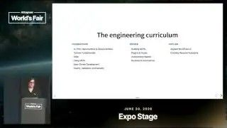
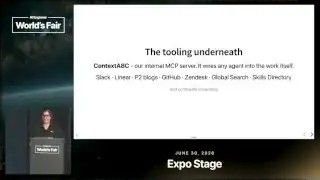
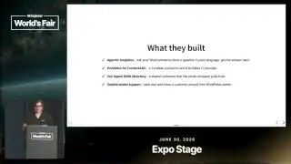

How a Remote Company Builds AI Fluency
Dar ferramentas de IA não muda o jeito de trabalhar. Tempo protegido para aprender e praticar muda, e cada egresso vira professor.
Em 3 frases
A Automattic (WordPress.com e Tumblr, mais de 1.400 pessoas em 82 países) aposta que as pessoas precisam de tempo real para aprender IA, e não só de acesso às ferramentas.
Ela roda programas presenciais de duas semanas, metade oficinas e metade projeto real, para engenheiros, times mistos e áreas não técnicas como finanças e liderança.
Cada egresso vira multiplicador por meio de guias, encontros locais, ride-alongs e um canal de ajuda; os resultados vêm de pesquisas com os participantes e de projetos construídos no programa.
Antes de ler
- MCP Model Context Protocol, protocolo que liga a IA a ferramentas
- Skill instrução reutilizável que ensina um agente a fazer uma tarefa
- Hooks ganchos que rodam código em pontos do ciclo do agente
- Harness ambiente que envolve o modelo e roda o agente
- Spec-driven development desenvolvimento guiado por especificação
- Observability observabilidade, ver o que o sistema faz
Metade aula, metade trabalho real
O programa dura duas semanas e é presencial. Metade do tempo é aprendizado facilitado, com oficinas dadas por colegas da própria empresa. A outra metade é trabalho real: cada pessoa traz uma tarefa, um painel ou uma skill que quer construir. Todo dia termina com demos dos projetos.

Currículo que vai do básico a agentes autônomos
Os primeiros dias cobrem skills, MCPs, spec-driven development (desenvolvimento guiado por especificação) e uso responsável de IA. Depois vêm a criação de MCPs, os hooks para estender o harness (ambiente que roda o agente) e os agentes autônomos em segundo plano. O fim traz tópicos aplicados ao WordPress.

Servidor MCP interno como base compartilhada
A empresa mantém um servidor MCP próprio, o Context A8C. Ele permite criar rápido conjuntos de ferramentas que não existem prontos e colocar camadas de governança e observabilidade. Os projetos dos participantes estendem esse servidor, e as capacidades se acumulam.

Mais 2 ideias deste talk
Cada egresso multiplica o alcance
Os formados viram guias (um programa de champions), organizam encontros locais de IA e dão ride-alongs, em que mostram como trabalham. Ver alguém com a mesma função usar a ferramenta é mais fácil de absorver do que ouvir conceitos. Um canal de Slack sempre aberto atende quem está começando.
Projetos de duas semanas, inclusive de quem não é engenheiro
Os participantes construíram um sistema agêntico de análise para lojas WooCommerce, um conector de Zendesk e um diretório de skills que funciona em várias ferramentas. A ferramenta de suporte guiado, que destaca partes da tela durante uma sessão de ajuda, saiu de uma pessoa de suporte.

O talk descreve um programa interno e não traz evidência de resultado de negócio. As métricas citadas (intencionalidade, fluxo, compartilhamento, ganho individual) vêm de pesquisas de autoavaliação, sem números, grupo de controle ou ligação com produtividade. Os projetos mostrados são escolhidos a dedo. A meta de 600 pessoas e os custos do programa não aparecem. No fim, a palestrante convida o público ao estande da empresa e fala dos conectores do WordPress, o que dá um tom de divulgação.
O que fazer com isso
- Reserve tempo protegido para o seu time aprender IA, por exemplo meio dia por semana, em vez de só liberar licenças.
- Peça que cada pessoa traga uma tarefa real para o treinamento. Aprender sobre trabalho de verdade fixa mais do que exemplos genéricos.
- Organize uma sessão curta em que alguém da sua área mostre como usa IA no dia a dia, como os ride-alongs da Automattic.
- Crie um lugar único para guardar e compartilhar skills e prompts úteis, para que o time construa sobre o trabalho dos outros.